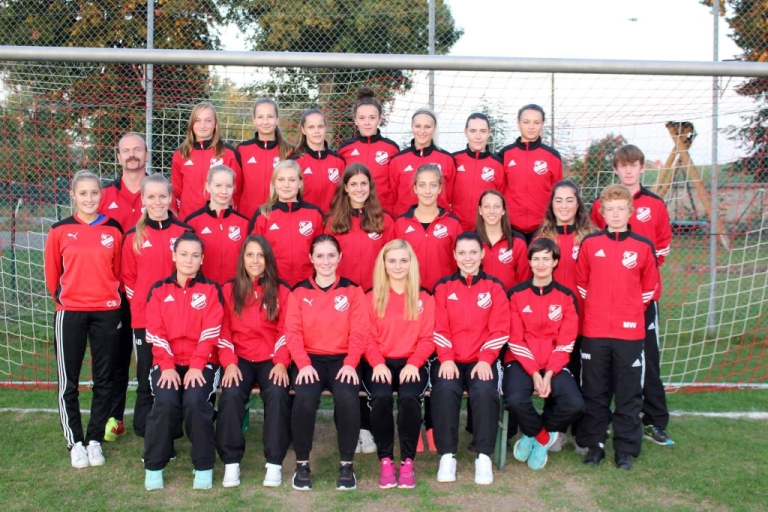

Frauen - 1. und 2. Mannschaft
1. Mannschaft Verbandsliga und 2. Mannschaft Bezirksliga
Trainer 1. Mannschaft - Verbandsliga:
Peter Steeb
Trainer 2. Mannschaft - Bezirksliga:
Ivica Braun Budrovac
Ansprechpartnerinnen:
Abteilungsleiterin:
Samantha Becker:
Mobil:
+49 172 1951443
E-Mail:
samantha.becker.sb@gmail.com
Abteilungsleiterin:
Carolin Schimpf:
Mobil:
+49 176 81132107
E-Mail:
carolin.schimpf@freenet.de
Trainingstage
Dienstag und Donnerstag von 19:00 - 21:00 Uhr
Spieltage
1. Mannschaft - Verbandsliga
Sonntag - Spielbeginn 11:00 Uhr
2. Mannschaft - Bezirksliga
Samstag - Spielbeginn 16:00 Uhr
Mannschaftsfoto 1. Mannschaft

Mannschaftsfoto 2. Mannschaft
